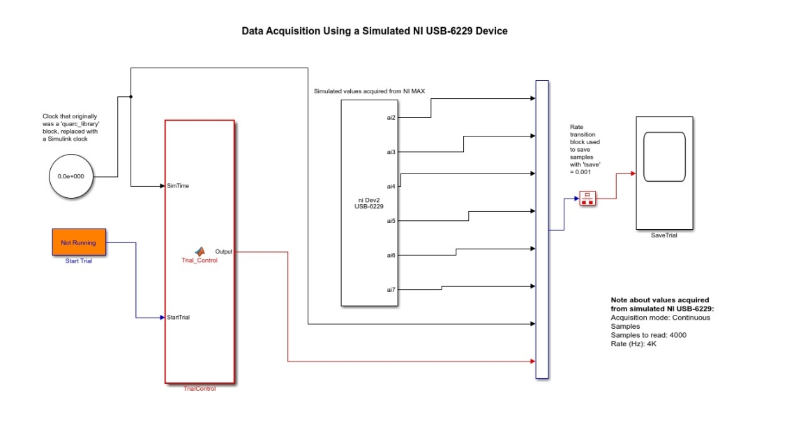

MSR Final Project.
Phase two.
Advisors: Dr. Netta Gurari and Dr. Jules Dewald
This phase of the project involved a hardware and software upgrade for the system in the Neuroimaging and Motor Control Laboratory at the Department of Physical Therapy and Human Movement Sciences, and well as a new sensor system for data collection.
Custom PC Build
As described in Phase One, we wanted to upgrade the computer from the 2008 setup to a new system and to run MATLAB 2018a or higher, along with real time data acquisition and a simulation environment. We chose to build a custom PC to address our system desires. The components chosen for this custom PC build were as follows: Intel Core i7-8700K Processor, Gigabyte Z370 HD3P LGA 1151 Motherboard, Gigabyte GeForce GTX 1050 DirectX 12 GV-N1050D5 Video Card, EVGA SuperNOVA 650 G3 Power Supply, Cryorig H7 Tower Cooler with 120mm PWM Fan, Team T-Force Night Hawk 32GB DDR4 SDRAM, and other essential computer peripherals.
Hardware Upgrade
The system installed in the lab in 2008 included a Quanser Q8 HIL (Hardware-in-the-Loop) data acquisition card that had the capability to acquire data from 8 analog input channels. The Quanser card had a legacy PCI (Peripheral Connect Interface) card to connect to the PC, and this card worked with the Quarc library in MATLAB to read in data to a Simulink program in real-time. However, there was a need to increase the number of analog inputs to be able to read in six channels for a JR3 force-torque sensor, as well as eight surface EMG (electromyography) sensors Hence, we selected a new National Instruments USB-6229 OEM Data Acquisition Card (DAQ) for the upgrade. The card has 32 analog input channels, 48 digital I/O pins, 4 analog outputs, and communicates with the PC via a USB-interface.
The analog input pins from the card are connected to a 34-pin ribbon - the individual wires from the ribbon are soldered to BNC connectors (connectors used for co-axial cables) for easy communication between the sensor outputs and data acquisition card.
Software Upgrade
The software upgrade included the installation of MATLAB 2018a, Visual Studio Community Edition, as well as the NI Measurement and Automation Explorer (NI MAX) software (to test the DAQ card) and Data Acquisition Toolbox in MATLAB (to read in data from the analog input channels of the DAQ for MATLAB/Simulink programs). The Robotics System Toolbox was also installed as an add-on for MATLAB and Simulink to be able to develop a simulation environment.
Testing the Data Acquisition Toolbox
Initially, before connecting the DAQ card to an actual torque sensor, the Data Acquisition Toolbox was tested in MATLAB using the NI MAX software, which allows a user to simulate ‘virtual analog channels’ as though a real DAQ is connected to the system via USB.
Selection of Sensors
In Phase One, it was mentioned that the main sensors for the system would be two JR3 force-torque sensors. However, the hardware required to install and operate one of the JR3 sensors was a legacy PCI card that had to be ordered from the manufacturer. Due to very long shipping times, an alternative was suggested for the bi-manual task by Dr. Gurari – two single DOF torque sensors manufactured by Futek. These two sensors would be fitted on either side of the Biodex chair where data collection takes place as an isometric setup. These sensors are different from the JR3 sensors since they have a single torque output channel as opposed to the three force and three torque channels of the JR3 sensor. This single channel represents torque about the z-axis.
Simulink Model for Data Collection from Sensors
The existing Simulink code being utilized on the older system included a model to start and stop data acquisition from the force-torque sensors, and to save data samples to a folder on the hard drive for analysis. This block for trial control was successfully implemented on the new system, along with the NI DAQ card, to save data samples to the hard drive at a desired frequency. The blocks utilized in Simulink were from the Data Acquisition Toolbox.The data are sampled at a frequency of 4KHz, and the data are saved at a frequency of 1KHz. 
Reading Sensor Data
The Futek sensors are based on a strain gauge system with a Wheatstone bridge. The bridge has a variable resistance that depends on the torque applied about the sensor’s z-axis, such that a change in the resistance changes the voltage across the bridge. Sometimes, these voltage changes can be too small to be detected by a data acquisition card, so there is an amplifier connected to the system with a gain that can be tuned – the output from this amplifier is read in by the data acquisition card. The amplifier that was used was the DMD-465WB Bridge Sensor manufactured by Omega. This bridge sensor serves two purposes: it provides a 10V DC excitation voltage to the Futek sensor, and it amplifies the signal output.
Sensor Calibration
The sensors are designed for a maximum torque capacity of 225 Newton-meters. To be able to accurately detect the torque generated by an individual, a calibration procedure for each sensor is needed. Using the amplifier circuit mentioned above, a calibration was completed for each torque sensor and connected amplifier to obtain a plot of torque versus voltage.
The blue points are data points that represent the amplified voltage output for torque values ranging from 20N-m to 180N-m, measured using weights suspended from the torque sensors, perpendicular to the axis of the sensor. Using MATLAB’s function to find the coefficient of determination, it was possible to find an equation for torque (Y-axis) as a function of voltage (X-axis). These equations can be used to determine torques produced by an individual on the basis of voltages that the DAQ detects from the torque sensor/amplifier circuit.
Future Simulation Work
The simulation work for the bi-manual training task is currently in progress - the completion of the initial task related to lifting and balancing of a platter will depend on the availability of JR3 sensors. Currently, the task is being redesigned to utilize single degree-of-freedom torque measurements from the two Futek sensors.